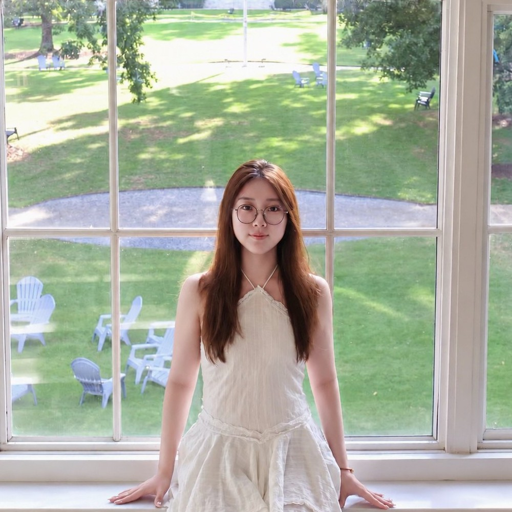

Mingke Tian
Undergraduate Student B.S. Applied Mathematics and Statistics B.S. Computer Science Emory University

I am an undergraduate student double majoring in Applied Mathematics and Statistics and Computer Science at Emory University. My research interests lie at the intersection of agentic AI, foundation models, and world models, with the goal of developing learning systems for modeling and decision-making in complex scientific and engineering systems. I am particularly interested in bringing mathematical structure into machine learning, building LLM agents that reason from feedback and experience, and learning world models that capture how states and actions evolve for inference, generation, and planning tasks. My long-term goal is to build AI that understands the systems it acts in and makes reliable decisions.
Research Interests
- Agentic AI (e.g., LLM agents, tool use, verifier-grounded reasoning)
- Foundation and world models (e.g., trajectory pretraining, latent state-action dynamics)
- Scientific machine learning (e.g., physics-informed networks, Bayesian inverse problems, optimization)
- Multimodal and embodied AI (e.g., vision-language models, vision-language-action policies)
Recent News
- Nov. 2026: Recent first-author preprints: ATSolver and MobilityWorld.
- Sep. 2026: Our work “CONSTRAINER: Promptable Graph-Structured Optimization via Constraint Conditioning” has been accepted to NeurIPS 2026 (Main Track).
- May 2026: I am honored to receive the Emory Wilson Family STEM Education Award (2026). This award is given to outstanding undergraduate students to recognize and support their research activities.
- Jun. 2025: Excited to be selected for the Emory NSF REU Program in Computational Mathematics for Data Science, and to receive a grant for our research on Bayesian inverse problems.
What I’m Doing
-
AI/ML Research
Building structure-aware learning systems and agents for science and engineering with agentic AI and world models.
-
Applied Engineering
Deploying AI systems in industry, from real robot learning to multimodal understanding and retrieval-augmented agents.
-
Community Leadership
Leading 100+ members as President of EUMMA to grow the math community and the “AI4SE” initiative to promote AI literacy.
Trading & Modeling
Forecasting real-world events with probabilistic models and managing risk on prediction markets and crypto trading.